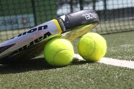

<section id="home">
  <div class="container">
    <div class="row">
      <div class="jumbotron img-background">
        <h1 class="text-justify">Padel U.P.M.</h1>
        <p class="text-justify">El club universitario más dinámico del mundo</p>
      </div>
    </div>

    <div class="row">
      <div class="col-md-4">
        <h2>Clases</h2>
        <p class="text-justify">El conjunto de monitores más cualificados se encargará de darte la formación en cuanto a técnica requerida en este deporte.
          Las clases prácticas te permitirán interiorizar los movimientos adecuados como si fuesen naturales.</p>
        <p class="text-justify">Las clases colectivas convierten las clases en un espacio dinámico en el que jugar se convierte en una actividad placentera y divertida.</p>
        
      </div>
      <div class="col-md-4">
        <h2>Entrenamientos</h2>
        <p class="text-justify">Si te sientes un campeón, de verdad lo eres o simplemente quieres avanzar rápidamente en la técnica que rodea a este deporte
          te podemos configurar sesiones de entrenamiento a tu medida con un entrenador personal que se encargará de:</p>
        <ul class="text-justify">
          <li>Enseñarte la técnica adecuada par mejorar tus golpes.</li>
          <li>Enseñarte a combinar la potencia con la técnica.</li>
          <li>Mostrarte como mejorar el rendimiento en equipo.</li>
          <li>Explicarte como utilizaar la presión de los campeonatos en tu beneficio.</li>
        </ul>

      </div>
      <div class="col-md-4">
        <h2>Campeonatos</h2>
        <p class="text-justify">El club organiza campeontatos periódicos en los que te puedes divertir al mismo tiempo que mejoras en el deporte.
          Tenemos campeonatos de un día, de fin de semana y ligas regulares. Puedes participar en los torneos masculinos, femeninos y mixtos.</p>
      </div>
    </div>
  </div>
</section>
